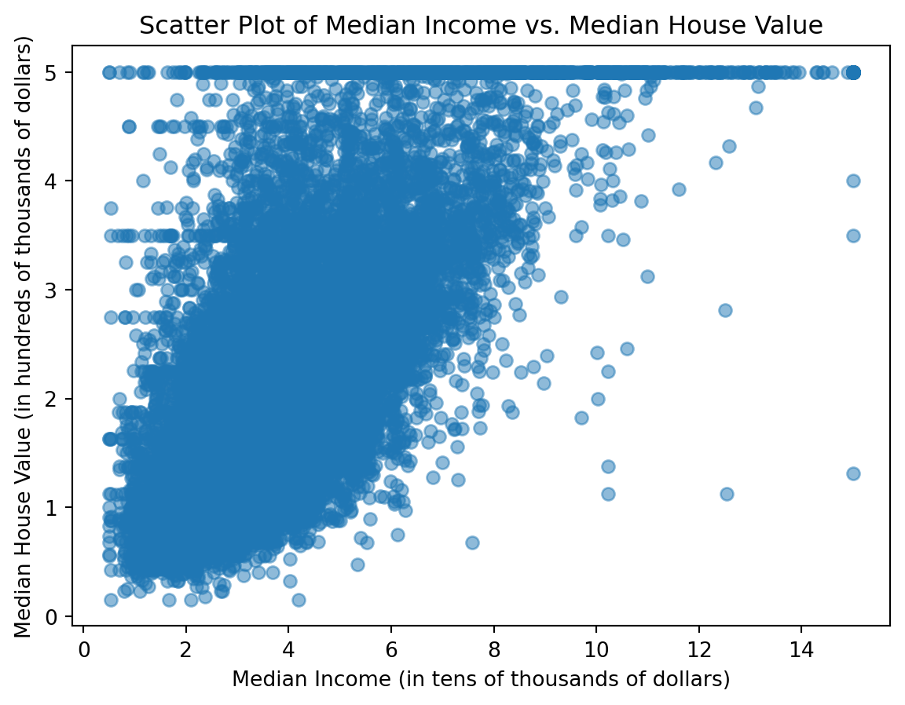
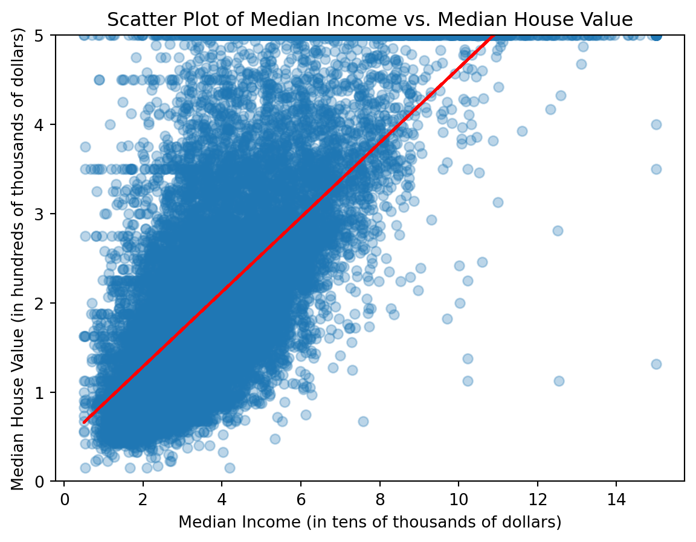

Code
import pandas as pd
import matplotlib.pyplot as plt
import numpy as np
from sklearn.datasets import fetch_california_housingBrody Duncan
February 18, 2026
Linear regression is an essential tool for any statistician, data scientist, or machine learning practitioner. Linear regression is used to model the relationship between a dependent variable and one or more independent variables. Linear regression can be used:
This tutorial will cover the basics of linear regression using Python. To demonstrate, a database containing housing prices in California and the residents’ income will be used. The goal of this tutorial is to predict the price of a house based on the residents’ income.
The libraries being used are pandas, matplotlib, NumPy, and sklearn. It may seem like a lot of libraries, but each one serves a specific purpose and will make the process much easier.
To import these libraries, use the following code:
Ensure the following libraries are installed in your Python environment by using the command pip install pandas matplotlib scikit-learn in your terminal.
Sklearn datasets are normally in a NumPy arrays format. To make it easier to work with, we will convert the dataset into a pandas DataFrame. We will do this using the following code:
as_frame = True combined with .frame allows us to easily convert the NumPy array into a pandas DataFrame. Each row in this dataset represents one district in California. This dataset contains 9 columns MedInc, HouseAge, AveRooms, AveBedrms, Population, AveOccup, Latitude, Longitude, MedHouseVal. For this tutorial we will be using MedInc (the median income for California districts in tens of thousands of dollars) to predict MedHouseVal (the median house value for California districts in hundreds of thousands of dollars). To isolate these two columns, we can use the following code:
Before we can build a linear regression model, it is important to check if a linear model would be appropriate to model the relationship between the two variables. To do this, we can create a scatter plot of the data using the following code:

This scatterplot shows a positive relationship between median income and median house value. As the median income increases, the median house value also tends to increase. This suggests that a linear regression model may be appropriate for modeling this relationship. Because of this, we can move forward with building a linear regression model to predict median house value based on median income.
Luckily, the equation for a linear regression model is simple. The equation is y = mx + b where m is the slope of the line and b is the y-intercept. To find the values of m and b, we can use the NumPy polyfit() function. This function will take the x and y values of every data point and calculate the best fit line. We can do this using the following code to display the previous scatterplot and then draw a line of best fit in red on top of it:
slope, intercept = np.polyfit(x, y, 1)
y_pred = slope * x + intercept
plt.scatter(x, y)
plt.xlabel("Median Income (in tens of thousands of dollars)")
plt.ylabel("Median House Value (in hundreds of thousands of dollars)")
plt.ylim(0,5)
plt.title("Scatter Plot of Median Income vs. Median House Value")
plt.plot(x, y_pred, color="red") # Plot the line of best fit
plt.show()
The line of best fit can be used to show general trends in the data and make predictions. For example, if we wanted to make an estimate of the median house value for a district with a median income of $50,000, we could simply use the code :slope * 5 + intercept. This returns a value of approximately 2.54. This means that based on the linear regression model we built, we would predict that the median house value for a district with a median income of $50,000 would be around $254,000.
Unfortunately, the line of best fit is not perfect and often does not perfectly capture the relationship between variables. The \(R^2\) value is a measure of how well the line of best fit captures the relationship between the independent and dependent variable. The \(R^2\) value ranges from 0 to 1, where a value of 1 indicates that the line of best fit perfectly captures the relationship between the variables, and a value of 0 indicates that the line of best fit does not capture any of the relationship between the variables. We will calculate the \(R^2\) value using the following code:
0.4734474918071989The \(R^2\) value for this model is approximately 0.4734. We interpret this as the line of best fit explains about 47% of the variance in median house value between median income and median house value. This shows there is still a lot of variability in the data. A \(R^2\) value of 0.4734 is not very good, but it is not terrible either.
In this tutorial, it was demonstrated how to build a simple linear regression model in Python. This can be easily applied to any dataset that has a somewhat linear relationship between the independent and dependent variables. Now that you have a basic understanding of how to build the model, try and find a dataset that you are interested in and see if you can build a linear regression model to make predictions. While it may have once been a complex process, it is now much easier to build a linear regression model with the help of libraries like NumPy and pandas.
---
title: "Linear Regression Tutorial"
author: "Brody Duncan"
date: "2026-02-18"
format:
html:
code-fold: true
toc: true
---
### Purpose
Linear regression is an essential tool for any statistician, data scientist, or machine learning practitioner. Linear regression is used to model the relationship between a dependent variable and one or more independent variables. Linear regression can be used:
* to make future predictions based on historical data
* to understand the strength of relationships between variables
* to identify trends in data
This tutorial will cover the basics of linear regression using Python. To demonstrate, a database containing housing prices in California and the residents' income will be used. The goal of this tutorial is to predict the price of a house based on the residents' income.
### Preparing the Data
#### Import Necessary Libraries
The libraries being used are *pandas*, *matplotlib*, *NumPy*, and *sklearn*. It may seem like a lot of libraries, but each one serves a specific purpose and will make the process much easier.
- *Pandas* is a useful library for creating dataframes and analysis.
- *Matplotlib* is used for creating data visualizations.
- *NumPy* is used for numerical operations and calculations.
- *Sklearn* contains the dataset we will be using for this tutorial. We will use the California Housing dataset available through sklearn’s fetch_california_housing() function.
To import these libraries, use the following code:
```{python}
import pandas as pd
import matplotlib.pyplot as plt
import numpy as np
from sklearn.datasets import fetch_california_housing
```
Ensure the following libraries are installed in your Python environment by using the command `pip install pandas matplotlib scikit-learn` in your terminal.
##### Load the Dataset
Sklearn datasets are normally in a NumPy arrays format. To make it easier to work with, we will convert the dataset into a pandas DataFrame. We will do this using the following code:
```{python}
df = fetch_california_housing(as_frame=True).frame
```
`as_frame = True` combined with `.frame` allows us to easily convert the NumPy array into a pandas DataFrame. Each row in this dataset represents one district in California. This dataset contains 9 columns `MedInc, HouseAge, AveRooms, AveBedrms, Population, AveOccup, Latitude, Longitude, MedHouseVal`. For this tutorial we will be using **MedInc** (the median income for California districts in tens of thousands of dollars) to predict **MedHouseVal** (the median house value for California districts in hundreds of thousands of dollars). To isolate these two columns, we can use the following code:
```{python}
x = df["MedInc"] # Will be mapped on the x-axis(independent variable)
y = df["MedHouseVal"] # Will be mapped on the y-axis(dependent variable)
```
### Exploratory Data Analysis
Before we can build a linear regression model, it is important to check if a linear model would be appropriate to model the relationship between the two variables. To do this, we can create a scatter plot of the data using the following code:
```{python}
plt.scatter(x, y, alpha = 0.5) # alpha is used to make the points more transparent
plt.xlabel("Median Income (in tens of thousands of dollars)")
plt.ylabel("Median House Value (in hundreds of thousands of dollars)")
plt.title("Scatter Plot of Median Income vs. Median House Value")
plt.show()
```
This scatterplot shows a positive relationship between median income and median house value. As the median income increases, the median house value also tends to increase. This suggests that a linear regression model may be appropriate for modeling this relationship. Because of this, we can move forward with building a linear regression model to predict median house value based on median income.
### Building a Linear Regression Model
Luckily, the equation for a linear regression model is simple. The equation is *y = mx + b* where *m* is the slope of the line and *b* is the y-intercept. To find the values of *m* and *b*, we can use the `NumPy polyfit()` function. This function will take the x and y values of every data point and calculate the best fit line. We can do this using the following code to display the previous scatterplot and then draw a line of best fit in red on top of it:
```{python}
slope, intercept = np.polyfit(x, y, 1)
y_pred = slope * x + intercept
plt.scatter(x, y)
plt.xlabel("Median Income (in tens of thousands of dollars)")
plt.ylabel("Median House Value (in hundreds of thousands of dollars)")
plt.ylim(0,5)
plt.title("Scatter Plot of Median Income vs. Median House Value")
plt.plot(x, y_pred, color="red") # Plot the line of best fit
plt.show()
```
#### Predictions
The line of best fit can be used to show general trends in the data and make predictions. For example, if we wanted to make an estimate of the median house value for a district with a median income of $50,000, we could simply use the code :`slope * 5 + intercept`. This returns a value of approximately 2.54. This means that based on the linear regression model we built, we would predict that the median house value for a district with a median income of $50,000 would be around $254,000.
#### $R^2$ Value
Unfortunately, the line of best fit is not perfect and often does not perfectly capture the relationship between variables. The $R^2$ value is a measure of how well the line of best fit captures the relationship between the independent and dependent variable. The $R^2$ value ranges from 0 to 1, where a value of 1 indicates that the line of best fit perfectly captures the relationship between the variables, and a value of 0 indicates that the line of best fit does not capture any of the relationship between the variables. We will calculate the $R^2$ value using the following code:
```{python}
ss_total = np.sum((y - np.mean(y))**2)
ss_residual = np.sum((y - y_pred)**2)
r2 = 1 - (ss_residual / ss_total)
print(r2)
```
The $R^2$ value for this model is approximately *0.4734*. We interpret this as the line of best fit explains about 47% of the variance in median house value between median income and median house value. This shows there is still a lot of variability in the data. A $R^2$ value of 0.4734 is not very good, but it is not terrible either.
### Conclusion
In this tutorial, it was demonstrated how to build a simple linear regression model in Python. This can be easily applied to any dataset that has a somewhat linear relationship between the independent and dependent variables. Now that you have a basic understanding of how to build the model, try and find a dataset that you are interested in and see if you can build a linear regression model to make predictions. While it may have once been a complex process, it is now much easier to build a linear regression model with the help of libraries like NumPy and pandas.
##### Notes
- The dataset used comes from a 1990s census taken in California
- The dataset caps out at a median house value of $500,000, which is why the y-axis in the scatterplot is limited to 5 (in hundreds of thousands of dollars), likely due to the way the census data was collected.